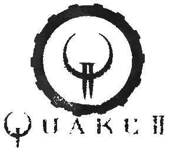

<!DOCTYPE HTML PUBLIC "-//IETF//DTD HTML//EN">
<html>

<head>
<meta http-equiv="Content-Type"
content="text/html; charset=iso-8859-1">
<meta name="GENERATOR" content="Microsoft FrontPage 2.0">
<title>Quake 2 Manual</title>
</head>

<frameset framespacing="0" border="false" rows="60,*,64"
frameborder="0">
    <frame name="top" scrolling="no" noresize target="middle"
    src="quake2_manual/top_nav.html">
    <frame name="main" target="bottom"
    src="quake2_manual/main.html" scrolling="auto">
    <frame name="bottom" src="quake2_manual/bottom.html"
    scrolling="no">
    <noframes>
    <body background="quake2_manual/images/manual_back.jpg"
    bgcolor="#000000" text="#C0C0C0" link="#CC6600"
    vlink="#CC6600">
    <div align="left"><table border="0" cellpadding="0"
    cellspacing="0" width="570">
        <tr>
            <td>&nbsp;&nbsp;&nbsp;&nbsp;&nbsp;&nbsp;&nbsp;&nbsp;&nbsp;&nbsp;&nbsp;</td>
            <td><p align="center"><font size="5" face="Arial"><b><br>
            Contents</b></font></p>
            <p>Y<font size="2">our field manual is broken up into
            several sections to aid you in your battle against
            the Strogg. Be sure to read all the information
            included in this manual so you have a clear
            understanding of what you are dealing with.</font></p>
            <p><font size="2">For the latest information and
            updates to this manual, be sure to check Command
            Headquarters at </font><a
            href="http://www.idsoftware.com/quake2"><font
            size="2">http://www.idsoftware.com/quake2</font></a><font
            size="2">.<br>
            </font></p>
            <p><a href="quake2_manual/customer_support.html"><font
            size="3" face="Arial"><strong>Customer Support</strong></font></a><font
            size="2" face="Arial"><strong><br>
            </strong></font><font size="2" face="Times">Before
            contacting customer support, please consult the
            technical help file. It contains the answers to some
            of our most frequently asked questions and may
            quickly and easily provide a solution to your
            difficulty. If after reviewing the technical help
            file you are still experiencing problems, please feel
            free to contact us through any of the services
            listed.</font></p>
            <p><a href="quake2_manual/story.html"><font
            face="Arial"><strong>The Story</strong></font></a></p>
            <p><a
            href="quake2_manual/setup_controls_screenmenus.html"><font
            face="Arial"><strong>Setup, Controls, Screen Menus</strong></font></a></p>
            <p><font size="2" face="Arial">&#149; Goal of the
            Game<br>
            &#149; Game Structure<br>
            &#149; Main Menu<br>
            &#149; Game Menu Selection<br>
            &#149; Multiplayer Menu Selection<br>
            &#149; Video Menu Selection<br>
            &#149; Options<br>
            &#149; On-Screen Information During Gameplay<br>
            &#149; Getting Around Stroggos</font></p>
            <p><a href="quake2_manual/intel_brief.html"><font
            size="3" face="Arial"><strong>TCM Intel Brief
            (Classified)</strong></font></a></p>
            <p><font size="2" face="Arial">&#149; </font><a
            href="quake2_manual/intel_brief2.html" target="main"><font
            size="2" face="Arial">Operation Alien Overlord</font></a><font
            size="2" face="Arial"><br>
            &#149; </font><a
            href="quake2_manual/intel_brief3.html" target="main"><font
            size="2" face="Arial">Military Objectives</font></a><font
            size="2" face="Arial"><br>
            &#149; </font><a
            href="quake2_manual/intel_brief4.html" target="main"><font
            size="2" face="Arial">The Stroggos Environment</font></a><font
            size="2" face="Arial"><br>
            &#149; </font><a
            href="quake2_manual/intel_brief5.html" target="main"><font
            size="2" face="Arial">Structural Systems</font></a><font
            size="2" face="Arial"><br>
            &#149; </font><a
            href="quake2_manual/intel_brief6.html" target="main"><font
            size="2" face="Arial">Environmental Hazards</font></a><font
            size="2" face="Arial"><br>
            &#149; </font><a
            href="quake2_manual/intel_brief7.html" target="main"><font
            size="2" face="Arial">Arsenal</font></a><font
            size="2" face="Arial"><br>
            &#149; </font><a
            href="quake2_manual/intel_brief8.html" target="main"><font
            size="2" face="Arial">Military Supplies</font></a></p>
            <p><a href="quake2_manual/intel_brief_enemy.html"><font
            size="3" face="Arial"><strong>Enemy Profiles</strong></font></a></p>
            <p><font size="2" face="Arial">&#149; </font><a
            href="quake2_manual/enemy_barracuda_shark.html"><font
            size="2" face="Arial">Barracuda Shark</font></a><font
            size="2" face="Arial"><br>
            &#149; </font><a
            href="quake2_manual/enemy_berserker.html"><font
            size="2" face="Arial">Berserker</font></a><font
            size="2" face="Arial"><br>
            &#149; </font><a
            href="quake2_manual/enemy_brains.html"><font size="2"
            face="Arial">Brains</font></a><font size="2"
            face="Arial"><br>
            &#149; </font><a
            href="quake2_manual/enemy_enforcer.html"><font
            size="2" face="Arial">Enforcer</font></a><font
            size="2" face="Arial"><br>
            &#149; </font><a
            href="quake2_manual/enemy_flyer.html"><font size="2"
            face="Arial">Flyer</font></a><font size="2"
            face="Arial"><br>
            &#149; </font><a
            href="quake2_manual/enemy_gladiator.html"><font
            size="2" face="Arial">Gladiator</font></a><font
            size="2" face="Arial"><br>
            &#149; </font><a
            href="quake2_manual/enemy_gunner.html"><font size="2"
            face="Arial">Gunner</font></a><font size="2"
            face="Arial"><br>
            &#149; </font><a
            href="quake2_manual/enemy_icarus.html"><font size="2"
            face="Arial">Icarus</font></a><font size="2"
            face="Arial"><br>
            &#149; </font><a
            href="quake2_manual/enemy_iron_maiden.html"><font
            size="2" face="Arial">Iron Maiden</font></a><font
            size="2" face="Arial"><br>
            &#149; </font><a
            href="quake2_manual/enemy_light_guard.html"><font
            size="2" face="Arial">Light Guard</font></a><font
            size="2" face="Arial"><br>
            &#149; </font><a
            href="quake2_manual/enemy_machinegun_guard.html"><font
            size="2" face="Arial">Machine-gun Guard</font></a><font
            size="2" face="Arial"><br>
            &#149; </font><a
            href="quake2_manual/enemy_medic.html"><font size="2"
            face="Arial">Medic</font></a><font size="2"
            face="Arial"><br>
            &#149; </font><a
            href="quake2_manual/enemy_mutant.html"><font size="2"
            face="Arial">Mutant</font></a><font size="2"
            face="Arial"> <br>
            &#149; </font><a
            href="quake2_manual/enemy_parasite.html"><font
            size="2" face="Arial">Parasite</font></a><font
            size="2" face="Arial"><br>
            &#149; </font><a
            href="quake2_manual/enemy_shotgun_guard.html"><font
            size="2" face="Arial">Shotgun Guard</font></a><font
            size="2" face="Arial"><br>
            &#149; </font><a href="quake2_manual/enemy_tank.html"><font
            size="2" face="Arial">Tank</font></a><font size="2"
            face="Arial"><br>
            &#149; </font><a
            href="quake2_manual/enemy_tank_commander.html"><font
            size="2" face="Arial">Tank Commander</font></a><font
            size="2" face="Arial"><br>
            &#149; </font><a
            href="quake2_manual/enemy_technician.html"><font
            size="2" face="Arial">Technician</font></a></p>
            <p><a href="quake2_manual/multiplayer.html"><font
            size="3" face="Arial"><strong>Quake II Multiplayer</strong></font></a></p>
            <p><a href="quake2_manual/credits.html"><font
            size="3" face="Arial"><strong>Credits / Legal</strong></font></a></p>
            </td>
        </tr>
    </table>
    </div>
    </body>
    </noframes>
</frameset>
</html>
